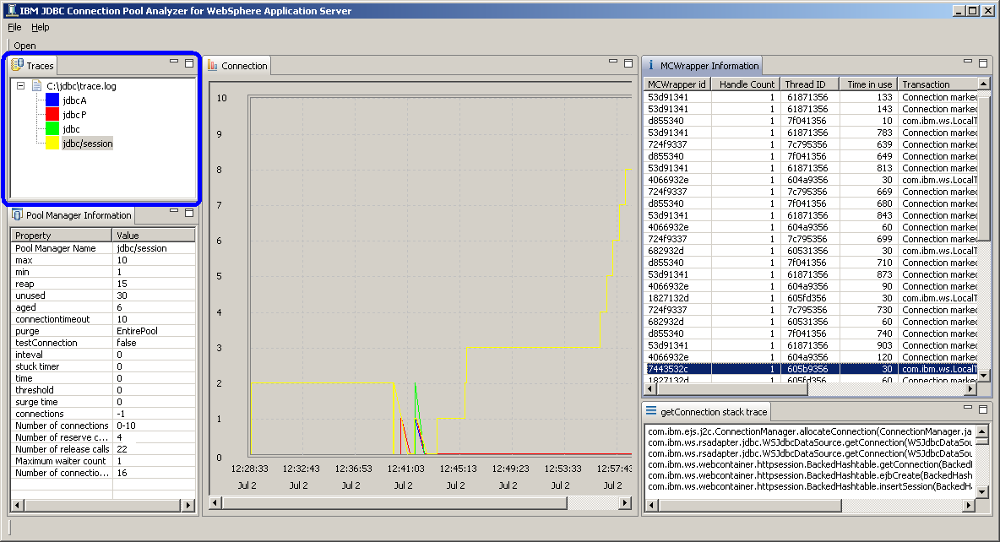

Traces View
Traces view is located on the upper left part of the tool.
Trace file name is displayed and JDBC data sources are listed under the file name.
Each data sources are color-coded to easily identified in Connection Chart view
By clicking on each data source, detailed information is displayed in different views.
